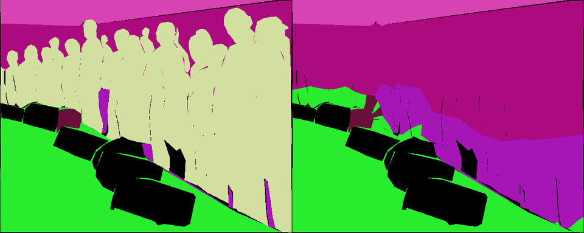
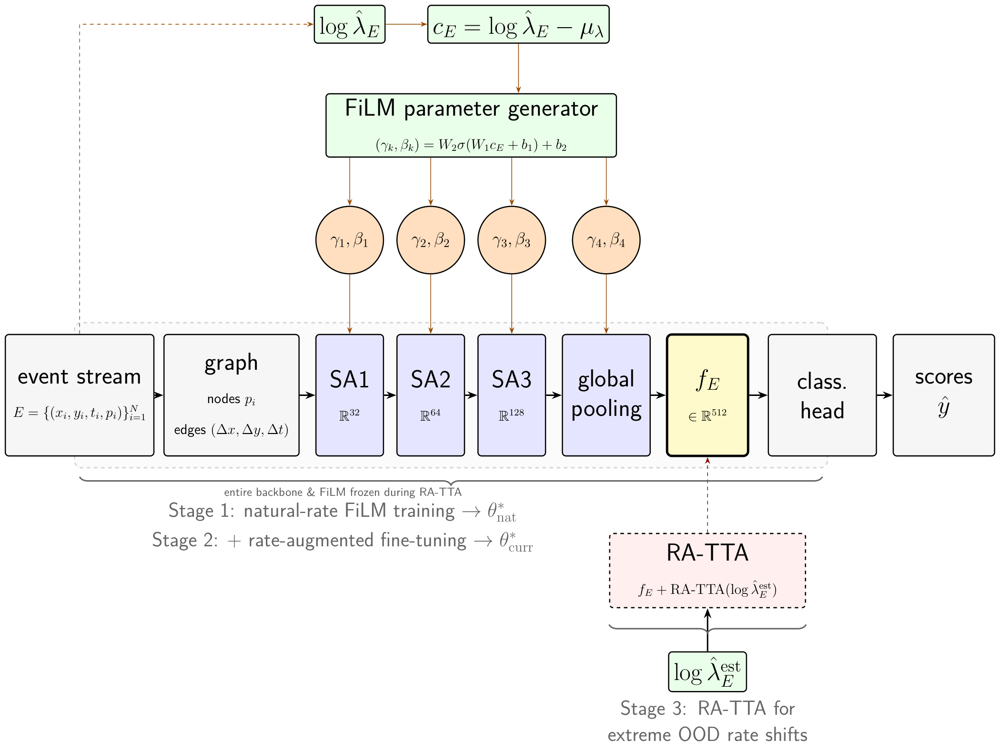
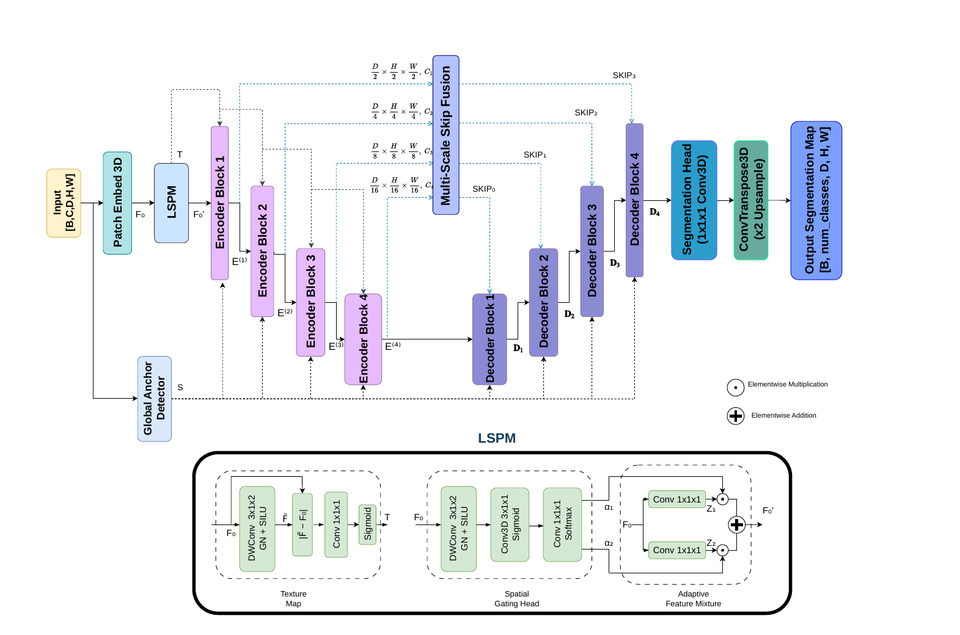
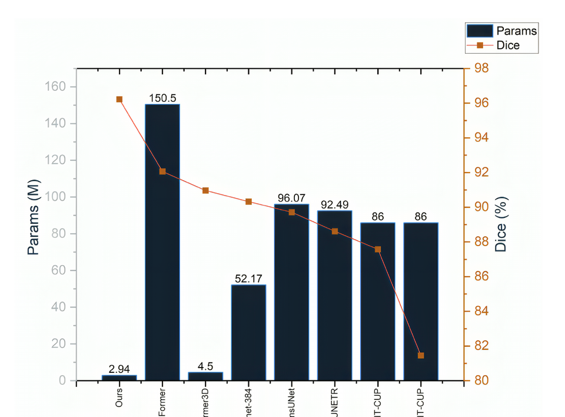

Publications
Papers and preprints. Code and project pages are linked where they are public.

Beyond the Frame: Redundancy, Not Trajectory, Carries the Privacy Leak in Video Unlearning
Kavyansh Tyagi, Paolo Russo
IEEE/CVF Winter Conference on Applications of Computer Vision (WACV), 2027
Kavyansh Tyagi, Paolo Russo
IEEE/CVF Winter Conference on Applications of Computer Vision (WACV), 2027
@misc{tyagi2026beyond,
title = {Beyond the Frame: Redundancy, Not Trajectory, Carries the Privacy Leak in Video Unlearning},
author = {Tyagi, Kavyansh and Russo, Paolo},
year = {2026},
eprint = {2610.27982},
archivePrefix = {arXiv},
primaryClass = {cs.CV},
url = {https://arxiv.org/abs/2610.27982}
}

ADVR: Adversarial-Replay Unlearning for Leak-Safe Semantic Segmentation
Kavyansh Tyagi, Paolo Russo
Under review, 2026
Kavyansh Tyagi, Paolo Russo
Under review, 2026

VolMamba v2 and AbSpec-Mamba: Physically Grounded State Space Models for Hyperspectral Super-Resolution
Kavyansh Tyagi, Paolo Russo
Manuscript in preparation, 2026
Kavyansh Tyagi, Paolo Russo
Manuscript in preparation, 2026

Rate as a Feature, Not a Nuisance: Curriculum FiLM Training for Event-Based Graph Neural Networks
Kavyansh Tyagi, Andreas Ziegler
ACCV 2026 Workshop on Advances in Event-based Computer Vision (AECV), Osaka, 2026
Kavyansh Tyagi, Andreas Ziegler
ACCV 2026 Workshop on Advances in Event-based Computer Vision (AECV), Osaka, 2026
@misc{tyagi2026rate,
title = {Rate as a Feature, Not a Nuisance: Curriculum FiLM Training for Event-Based Graph Neural Networks},
author = {Tyagi, Kavyansh and Ziegler, Andreas},
year = {2026},
eprint = {2610.26933},
archivePrefix = {arXiv},
primaryClass = {cs.CV},
url = {https://arxiv.org/abs/2610.26933}
}

LightMedSeg: Lightweight 3D Medical Image Segmentation with Learned Spatial Anchors
Kavyansh Tyagi, Vishwas Rathi, Puneet Goyal
IEEE/CVF Conference on Computer Vision and Pattern Recognition Workshops (CVPRW), 2026
Kavyansh Tyagi, Vishwas Rathi, Puneet Goyal
IEEE/CVF Conference on Computer Vision and Pattern Recognition Workshops (CVPRW), 2026
@inproceedings{tyagi2026lightmedseg,
title = {LightMedSeg: Lightweight 3D Medical Image Segmentation with Learned Spatial Anchors},
author = {Tyagi, Kavyansh and Rathi, Vishwas and Goyal, Puneet},
booktitle = {IEEE/CVF Conference on Computer Vision and Pattern Recognition Workshops (CVPRW)},
year = {2026},
note = {arXiv:2603.07228}
}

RefineFormer3D: Efficient 3D Medical Image Segmentation via Adaptive Multi-Scale Transformer with Cross Attention Fusion
Kavyansh Tyagi, Vishwas Rathi, Puneet Goyal
arXiv preprint arXiv:2602.16320, 2026
Kavyansh Tyagi, Vishwas Rathi, Puneet Goyal
arXiv preprint arXiv:2602.16320, 2026
@article{tyagi2026refineformer3d,
title = {RefineFormer3D: Efficient 3D Medical Image Segmentation via Adaptive Multi-Scale Transformer with Cross Attention Fusion},
author = {Tyagi, Kavyansh and Rathi, Vishwas and Goyal, Puneet},
journal = {arXiv preprint arXiv:2602.16320},
year = {2026}
}

SCAF: Robust Hyperspectral Classification via Optimal Transport-Based Spectral Grouping
Kavyansh Tyagi et al.
Preprint, under review
Kavyansh Tyagi et al.
Preprint, under review

Ghidra-Assisted Static Analysis and Ensemble Learning with Differential-Privacy GANs for Ransomware Detection
Ananya Chaturvedi, Kavyansh Tyagi, Shweta Sharma, Sweeti Sah
Proceedings of Data Analytics and Management (ICDAM 2025), Springer, 2025
Ananya Chaturvedi, Kavyansh Tyagi, Shweta Sharma, Sweeti Sah
Proceedings of Data Analytics and Management (ICDAM 2025), Springer, 2025